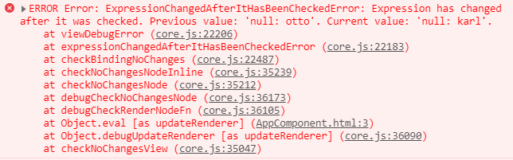

Asynchronous development with Angular
Philip Schmökel
What do you know about the JavaScript Eventloop?

- You know about Tasks and Jobs/Microtasks?
Each thread has its own event loop.
- UI per origin
- web workers
Explain the relation between Event Loop, Tasks and Microtasks
What will be the log result?
console.log('script start');
setTimeout(function() {
console.log('setTimeout');
}, 0);
Promise.resolve().then(function() {
console.log('promise1');
}).then(function() {
console.log('promise2');
});
console.log('script end');
What is a Task?
import { fakeAsync, tick } from '@angular/core/testing';
it('should set flag to true', fakeAsync(() => {
let flag = false;
setTimeout(() => { flag = true; });
expect(flag).toBeFalsy();
tick();
expect(flag).toBeTruthy();
}));
The Browser needs a task to render changes.
What is a Microtask?
import { fakeAsync, flushMicrotasks } from '@angular/core/testing';
it('should set flag to true', fakeAsync(() => {
let flag = false;
Promise.resolve().then(() => { flag = true; });
expect(flag).toBeFalsy();
flushMicrotasks();
expect(flag).toBeTruthy();
}));
microtask queue is processed
- after a callback when Event Loop idles
- at the end of a task
button.addEventListener("click", () => {
console.log("Listener 1");
setTimeout(() => {
console.log("Settimeout 1");
}, 0);
Promise.resolve().then(() =>) {
console.log("Promise 1");
});
});
button.addEventListener("click", () => {
console.log("Listener 2");
setTimeout(() => {
console.log("Settimeout 2");
}, 0);
Promise.resolve().then(() => {
console.log("Promise 2");
});
});
What's the correct order?
Let's talk rxjs
const subject = new Subject<boolean>();
const obs = subject.asObservable();
obs.subscribe(v => console.log('next value', v));
subject.next(true);
console.log('Send next value');
What's happening here? What's the correct order?
rxjs Obervable callbacks are not always microtasks!
const subject = new Subject<boolean>();
const obs = subject.asObservable();
obs.pipe(observeOn(asyncScheduler))
.subscribe(v => console.log('next value', v));
subject.next(true);
console.log('Send next value');
What is happening now?
From the rxjs docs
A Scheduler lets you define in what execution context will an Observable deliver notifications to its Observer.
Please explain!
What's different here?
this.httpClient.get('/api/books').subscribe(v => console.log('next value', v));
console.log('after');
So Angular does it right. Why should I care?
You know this? Can you explain what happened?
/* dumb example, just for the kicks :-) */
ngAfterViewInit() {
this.title = 'karl';
}
How to fix it? What's the better option?
/* Promise */
Promise.resolve().then(() => this.title = 'karl');
/* Timeout */
setTimeout(() => this.title = 'karl');
/* Change Detector */
this.title = 'karl';
this.changeDetectorRef.detectChanges();
/* asyncScheduler */
asyncScheduler.schedule(() => {
this.title = 'karl';
});
An advanced example
- OttoComponent uses OttoService
- OttoService.get() returns Observable<Otto[]>
- OttoComponent calls get() in ngOnInit()
Basic unit test
describe('OttoComponent', () => {
beforeEach(() => {
TestBed.configureTestingModule({
declarations: [ OttoComponent ],
providers: [{
provide: OttoService,
useValue: jasmine.createSpyObj('OttoService', {
get: of([{id: 1}])
})
}]
})
});
it('loads Ottos', () => {
fixture.detectChanges();
expect(element.querySelectorAll('.otto').length).toEqual(1);
});
});
What's wrong? Why is this not a good unit test?
To understand the problem a little further
ngOnInit() {
this.loading = true;
this.todosService.get().subscribe(todos => {
this.todos = todos;
this.loading = false;
});
}
How's this code run in test and how in production?
describe('OttoComponent', () => {
beforeEach(() => {
TestBed.configureTestingModule({
declarations: [ OttoComponent ],
providers: [{
provide: OttoService,
useValue: jasmine.createSpyObj('OttoService', {
get: of([{id: 1}, asyncScheduler])
})
}]
})
});
it('loads Ottos', () => {
fixture.detectChanges();
expect(element.querySelectorAll('.otto').length).toEqual(1);
});
});
Please explain the fix and why this small change makes all the difference
Please explain the marble diagram
Please explain the code
ngOnInit() {
this.todo$ = this.route.params.pipe(
switchMap(params => this.todoService.getTodo(+params['id']))
)
}
... and how does it differ to the following?
ngOnInit() {
this.route.params.subscribe(params => {
this.todoService.getTodo(+params['id']).subscribe(todo => {
this.todo = todo;
});
});
}
Which version is better and why?
Please explain the following code
import { fromEvent } from 'rxjs';
import { ajax } from 'rxjs/ajax';
import { map, filter, debounceTime, distinctUntilChanged, switchMap } from 'rxjs/operators';
const searchInput = document.getElementById('search-box');
const typeahead = fromEvent(searchInput, 'input').pipe(
map((e: KeyboardEvent) => e.target.value),
filter(text => text.length > 3),
debounceTime(150),
distinctUntilChanged(),
switchMap(() => ajax('/api/search'))
);
typeahead.subscribe(data => {
// handle search result
});
... what does each operator do exactly? What about the order? Is it important?
Exercise
Switch to branch exercise/rxjs
- Run UnitTests
- Implement the features. Do not alter the tests.
Resources
- RXJS Docs
- HTML Spec: Event Loops
-
When I told my colleague [...] I was thinking of writing a piece on microtask queueing and execution within the browser's event loop, he said "I'll be honest with you Jake, I'm not going to read that".
Deep Dive: Blog Post by Chrome Dev. Expert. - Blog Article: Testing Observables in Angular